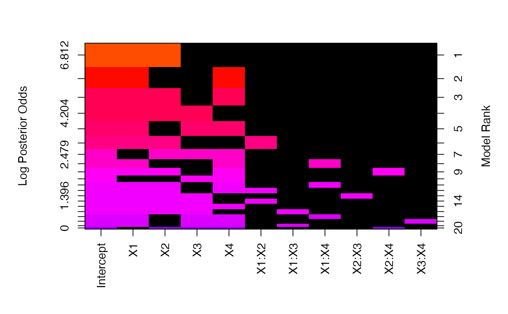

Post processing function to force constraints on interaction inclusion bas BMA objects
Source:R/interactions.R
force.heredity.bas.RdThis function takes the output of a bas object and allows higher order interactions to be included only if their parent lower order interactions terms are in the model, by assigning zero prior probability, and hence posterior probability, to models that do not include their respective parents.
Value
a bas object with updated models, coefficients and summaries obtained removing all models with zero prior and posterior probabilities.
Note
Currently prior probabilities are computed using conditional Bernoulli distributions, i.e. P(gamma_j = 1 | Parents(gamma_j) = 1) = prior.prob. This is not very efficient for models with a large number of levels. Future updates will force this at the time of sampling.
See also
Other bas methods:
BAS,
bas.lm(),
coef.bas(),
confint.coef.bas(),
confint.pred.bas(),
diagnostics(),
fitted.bas(),
image.bas(),
plot.confint.bas(),
predict.bas(),
predict.basglm(),
summary.bas(),
update.bas(),
variable.names.pred.bas()
Examples
data("chickwts")
bas.chk <- bas.lm(weight ~ feed, data = chickwts)
# summary(bas.chk) # 2^5 = 32 models
bas.chk.int <- force.heredity.bas(bas.chk)
# summary(bas.chk.int) # two models now
data(Hald)
bas.hald <- bas.lm(Y ~ .^2, data = Hald)
bas.hald.int <- force.heredity.bas(bas.hald)
image(bas.hald.int)

image(bas.hald.int)
# two-way interactions
data(ToothGrowth)
ToothGrowth$dose <- factor(ToothGrowth$dose)
levels(ToothGrowth$dose) <- c("Low", "Medium", "High")
TG.bas <- bas.lm(len ~ supp * dose, data = ToothGrowth, modelprior = uniform())
TG.bas.int <- force.heredity.bas(TG.bas)
image(TG.bas.int)